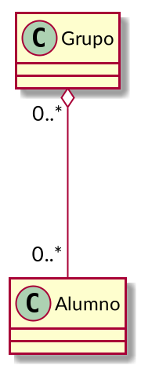

Relaciones entre clases Python
Ricardo Pérez López
IES Doñana, curso 2020/2021
1 Relaciones básicas
1.1 Asociación
Una asociación es una relación genérica que se establece entre dos clases.
Representa el hecho de que una clase «usa» a la otra de alguna forma.
Normalmente se da cuando un método de una clase necesita acceder a una instancia de otra clase.
Esa instancia la puede recibir como argumento, o bien puede crearla y destruirla el propio método.
Por ejemplo:
class Calculadora: @staticmethod def suma(x, y): """Devuelve la suma de dos instancias de la clase Numero.""" return x.get_valor() + y.get_valor()Aquí se establece una asociación entre las clases
CalculadorayNumero.
- En UML, podríamos representarla así:

1.2 Agregación
La agregación es una relación que se establece entre una clase (la agregadora) y otra clase (la agregada).
Representa la relación «tiene»: la agregadora tiene a la agregada.
Podríamos decir que la agregada forma parte de la agregadora, pero de una forma débil, ya que los objetos de la clase agregadora y de la clase agregada tienen su existencia propia, independiente.
Por tanto:
La agregada puede formar parte de varias agregadoras.
Según sea el caso, el objeto de la clase agregada puede existir aunque no forme parte de ningún objeto agregador.
La clase agregadora no tiene por qué ser la responsable de crear el objeto agregado.
Cuando se destruye un objeto de la clase agregadora, no es necesario destruir los objetos de la clase agregada.
Por ejemplo:
Los grupos tienen alumnos. Un alumno puede pertenecer a varios grupos, y un alumno existe por sí mismo aunque no pertenezca a ningún grupo.
La clase
Grupo«agrega» a la claseAlumno.

class Grupo:
def __init__(self):
self.__alumnos = [] # Guarda una lista de referencias a Alumnos
def get_alumnos(self):
return self.__alumnos
def meter_alumno(self, alumno):
self.__alumnos.append(alumno)
def sacar_alumno(self, alumno):
try:
self.__alumnos.remove(alumno)
except ValueError:
raise ValueError("El alumno no está en el grupo")
daw1 = Grupo() # Los objetos los crea...
pepe = Alumno() # ... el programa principal, así que ...
juan = Alumno() # ... ningún objeto crea a otro.
daw1.meter_alumno(pepe) # Metemos en __alumnos una referencia a pepe
daw1.meter_alumno(juan) # Metemos en __alumnos una referencia a juan
daw1.sacar_alumno(pepe) # Eliminamos de __alumnos la referencia a pepe
daw2 = Grupo() # Se crea otro grupo
daw2.meter_alumno(juan) # juan está en daw1 y daw2 al mismo tiempo